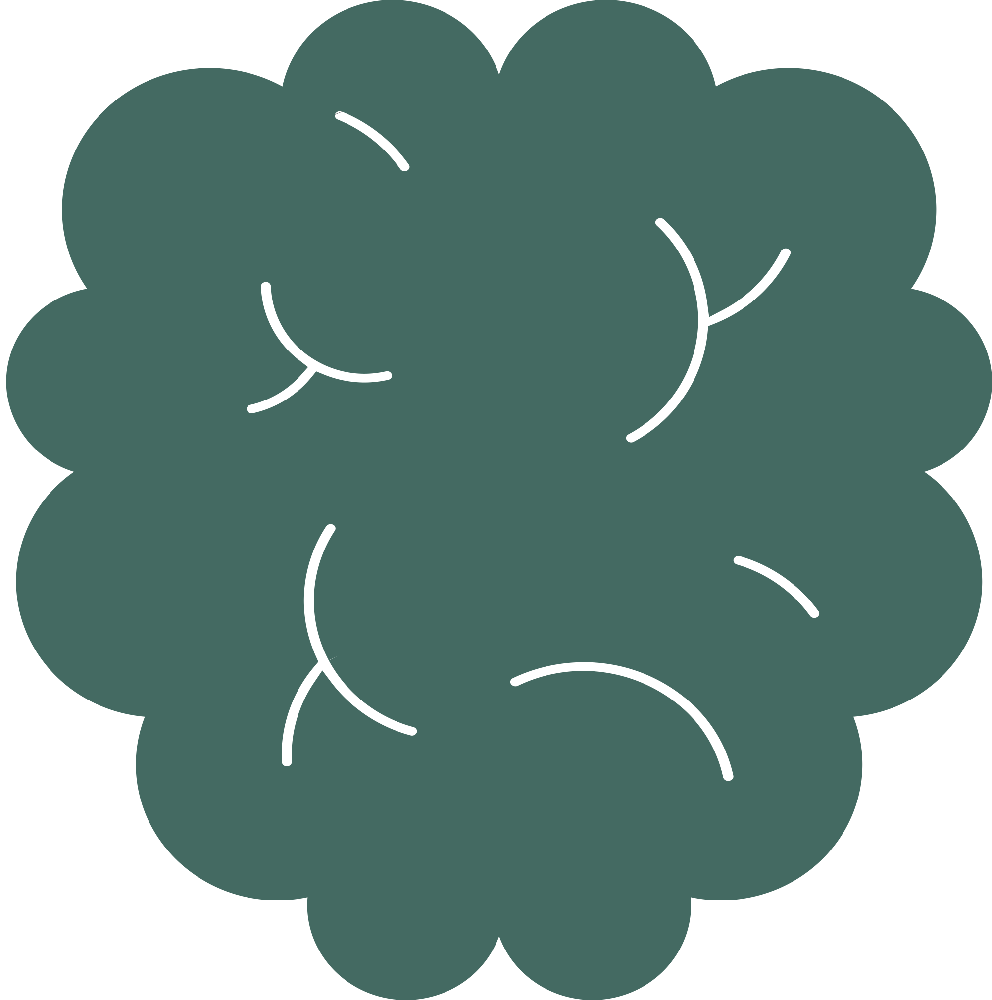
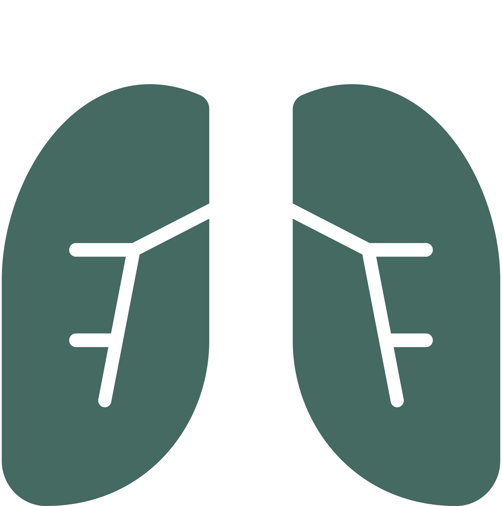
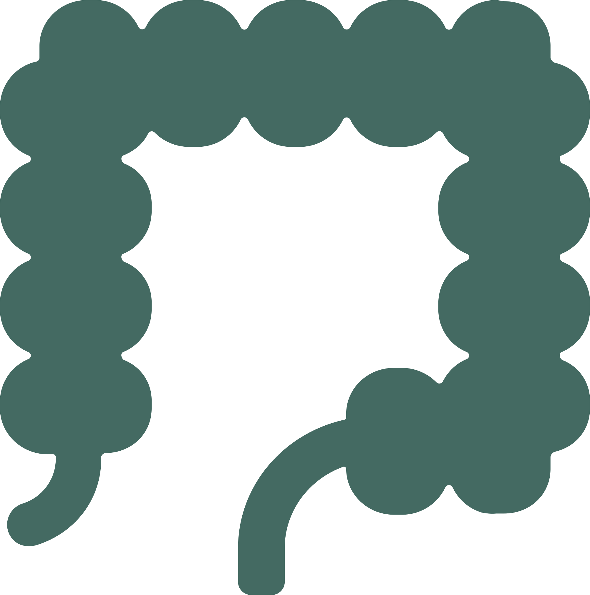
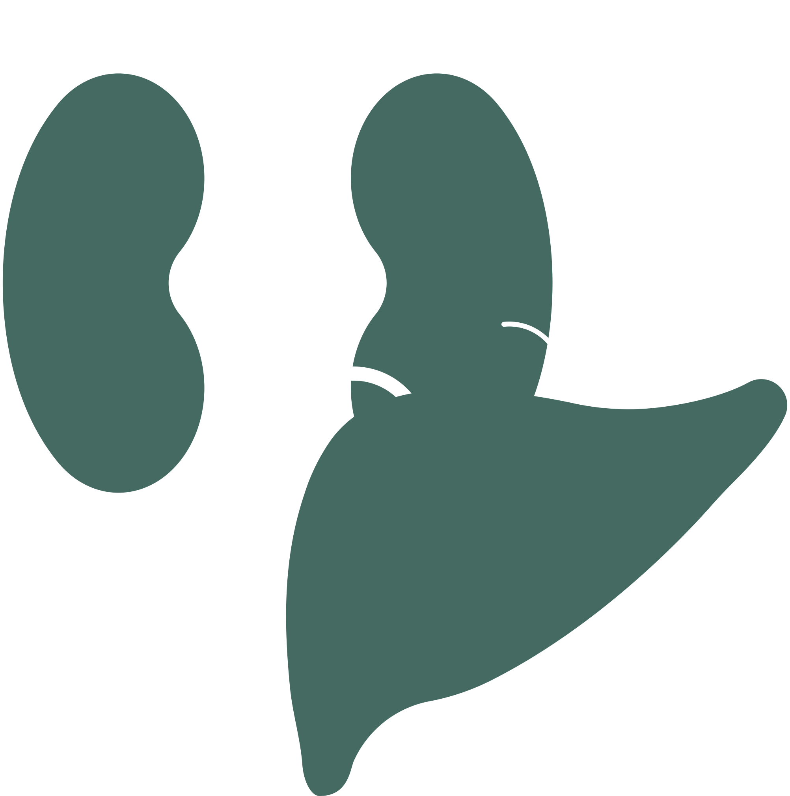
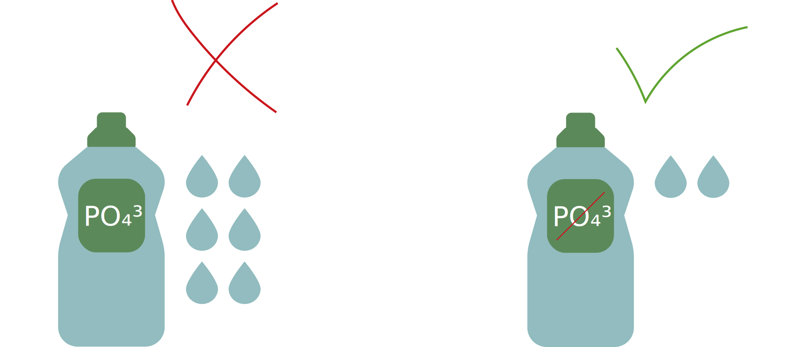

Erie Lake


The map depicts places with factories 
and agricultures  around rivers
around rivers


Brain
Ingestion way- Headache
- Incoherent speech
- Drowsiness
- Coordination loss

Respiratory system
Inhalation way- Dry cough
- Pneumonia
- Sore throat
- Shortness of breath

Digestive system
Ingestion way- Abdominal pain
- Nausea
- Vomiting
- Diarrhea
- Stomach cramps

Organs
Ingestion way- Kidney damage
- Abnormal kidney function
- Liver inflammation
Body
Contact (swimming)- Irritation in eyes, nose and throat
- Blistering around the mouth
- Skin rash
- Fever
- Muscle ache (ingestion)
- Weakness (ingestion)
Nervous system
Ingestion way- Tingling
- Burning
- Numbness
Even for lawn and garden care, apply fertilizers only when necessary and at the recommended amount. Don’t apply fertilizer before windy or rainy days or in an area close to waterways. Also, store unused fertilizers and dispose of empty containers properly.

Choose non-toxic phosphate-free detergents, soaps, and household cleaners at home and while washing your car. Use the amount of detergent or soap sparingly; more is not better.